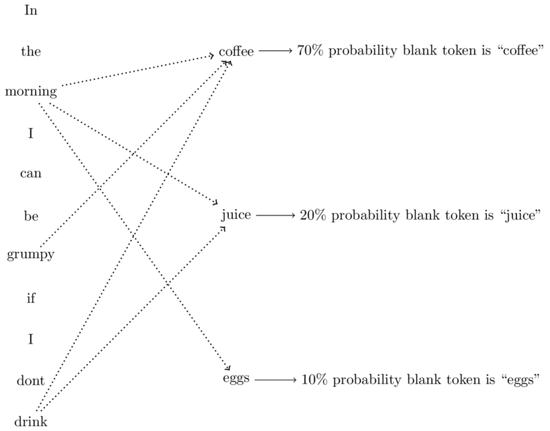
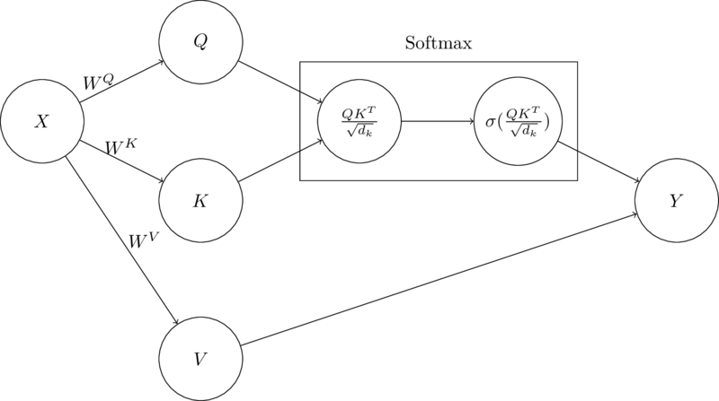
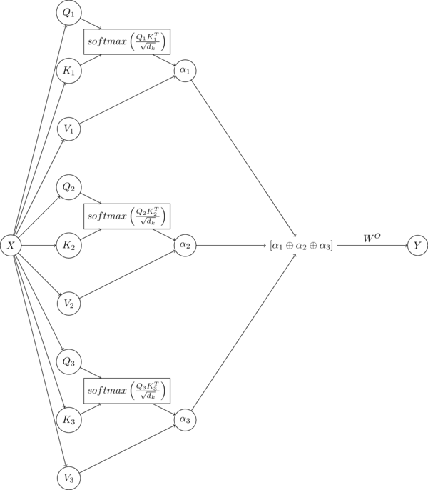
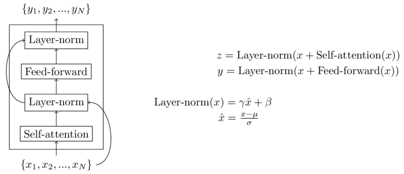

A transformer is a neural network architecture for sequence processing that is based on the self-attention mechanism. The model was introduced in the paper Attention is All You Need in 2017 with experiments on machine translation and constituency parsing in English. Transformers enable more efficient parallel processing for sequential problems when compared to prior recurrent-connection based approaches. Compared to prior models, transformers are very effective at processing long-term dependencies in sequences.
In this post I will be discussing self-attention, multi-headed self attention, the transformer architecture, as well as some additional mechanisms commonly seen in transformer architectures, including residual connections, layer normalization, and positional embeddings. For more information on deep learning in general, background on language modeling, or word embeddings it may help to look at my previous posts titled Classification and Regression with Neural Networks, N-Gram Language Models, and Word Embeddings. In this post I do not explicitly go over how the learning process works. If you are interested, the previously mentioned posts in conjunction with the provided computation graphs should be enough to get you started on how these models learn explicitly using backpropagation.
Attention is an approach to sequence modeling that attempts to determine the relative importance of every object in an input sequence for a given position in an output sequence. In simple terms, when determining the label at a particular position of an output sequence, attention determines which of the members of the input sequence to "pay attention" to most. In the following example, given the input, "In the morning I can be grumpy if I don't drink [blank]", in determining what the blank token is, some words may matter more than others. Given a vocabulary of the following options: "coffee", "juice", and "eggs", the input tokens "morning", "drink", and "grumpy" are clues that the resulting blank should more likely be "coffee" than "juice" or "eggs", as displayed in the diagram below.

Attention is a mechanism that takes in a query and a set of key value pairs as input and produces a weighted sum of values as outputs, where the weight of each value is determined by a comparison between the query and the respective key for the value. In self-attention, given an input sequence \(x_1, ..., x_N\), each member of the sequence plays the role of query and key, resulting in comparisons between every member of the sequence with every other member of the sequence. The calculation of a single self-attention output is displayed below:
Query, key, and value vectors are calculated using input vectors \(x_1, ..., x_N\) and weight vectors \(W^Q, W^K, W^V\). The query and key vectors \(q_i\) and \(k_j\) are compared using a dot product, and scaled by the square root of the dimension of \(q\) and \(k\) vectors \(d_k\). The softmax function is performed over all comparisons of \(q_i\) and \(k_j \forall j\). The comparison is then used as a weight for the value vector \(v_j\) and the weighted values are added to produce output \(y_i\). The computation graph below displays the first self-attention outputs assuming a sequence of length 3:
The computation graph above displays the calculations required for a single \(y\) output given input sequence \(\{x_1, x_2, x_3\}\). Self-attention computations can be batched such that all \(y\) outputs can be calculated in parallel by using matrices \(Q, K, V\) rather than single \(q, k, v\) vectors. The calculation of self attention for all inputs \(X\) is shown below:
Using this approach computation can be done very efficiently in parallel for all input sequences using common mathematical and/or deep learning libraries such as numpy or pytorch. Weight matrices \(W^Q, W^K, W^V\) are learned using gradient-based approaches. The computation graph below displays the batched version of self-attention.

In the formulation shown, words in a sequence \(X\) are all compared to each other once. However, often words can have multiple different relationships with each other. In order to capture these relationships, in training we often use what is called multi-headed attention. Multi-headed attention involves taking multiple query and key values for each term in the sequence and performing self-attention on each layer, or each setting of query and key values. A computation graph for a multi-headed attention layer is shown below, with 3 heads. The outputs of each head \({\alpha_1, \alpha_2, \alpha_3}\) are concatenated at the end and multiplied with a fourth weight matrix (\(W^O\)) to produce output \(Y\).

In the original transformer architecture, self-attention layers are placed into larger blocks called encoder and decoder blocks. Not all transformer models consist of both encoders, decoders, or either, but they are common enough that it is worth discussing what they are and how self-attention plays a role in their functionality with respect to transformers.
In Attention is All you need, the primary (not the only!) difference between the encoder and the decoder blocks is that the decoder block is autoregressive and the encoder block is not. This means that when an encoder block is given a sequence, all members of the sequence are compared with each other. However, in the case of the decoder, each member of the input sequence is only compared with the members of the sequence that appear before it. Conceptually, encoders are used to create dense representations of provided inputs, while decoders take encoded representations as input and produce outputs in the required format.
In addition to multi-headed self-attention, transformer blocks also contain a feed-forward layer, residual connections, as well as layer normalization. Transformer models generally also use positional embeddings to model word order. An example of an entire transformer block is shown in the diagram below.
Residual connections allow information to skip layers in order to preserve knowledge from lower layers. They are implemented in transformer blocks by simply adding the output of a lower layer to the output of the current layer before proceeding to the next layer. Layer normalization keeps layer outputs within a particular range in order to improve gradient-based learning. Layer normalization and residual connections are shown in the diagram of the transofmer block below.
Transformers explicitly model word order using positional embeddings, which are vectors of the same size as model input, with one for each position in the window size of the model input. They are added to the input embeddings and can be learned during the training of the model

The code for a multi-headed transformer decoder model is shown in the block below
from torch.nn import ModuleList, Identity, Dropout, Softmax, Linear, Module, GELU
from torch import Tensor, einsum, square, mean, ones, sqrt, tril, cat
from torch import sum as sum_
class TransformerDecoder(Module):
def __init__(self, vocab_size: int, embedding_size: int, window_size: int,
d_k: int, d_v: int, n_heads: int, hidden: int, n_blocks: int,
dropout: float, device: str):
""" Initialized tranformer-based decoder
Args:
vocab_size: input vocabulary size
embedding_size: embedding size
window_size: sequence window size
d_k: self-attention query, key dimension size
d_v: self-attention value size
n_heads: number of self-attention heads
hidden: number of hidden units in feed forward layers
n_blocks: number of transformer blocks
dropout: dropout amount
device: device to put model on
"""
super().__init__()
self.pids = Tensor([i for i in range(window_size + 1)]).to(device)
self.embedding = Embedding(vocab_size, embedding_size, device)
self.position = Embedding(window_size + 1, embedding_size, device)
self.blocks = ModuleList([
TransformerBlock(embedding_size, d_k, d_v, n_heads, hidden, dropout, device) \
for i in range(n_blocks)
])
self.w = Linear(embedding_size, vocab_size).to(device)
self.device = device
def forward(self, X: Tensor) -> Tensor:
X = self.embedding(X)
X += self.position(self.pids)
for block in self.blocks:
X = block(X)
return self.w(X)[:, -1, :]
class TransformerBlock(Module):
def __init__(self, d_in, d_k, d_v, n_heads, hidden, dropout, device):
""" Initialized tranformer block
Args:
d_in: input size
d_k: self-attention query, key dimension size
d_v: self-attention value size
n_heads: number of self-attention heads
hidden: number of hidden units in feed forward layers
dropout: dropout amount
device: device to put model on
"""
super().__init__()
self.attention = MultiHeadAttentionLayer(d_in, d_k, d_v, n_heads, device)
self.layer_norm = LayerNorm()
self.ffl1 = PositionWiseFFL(d_in, hidden, GELU(), device)
self.ffl2 = PositionWiseFFL(hidden, d_in, Identity(), device)
self.d1 = Dropout(p=dropout)
self.d2 = Dropout(p=dropout)
def forward(self, X):
Z = self.layer_norm(X + self.d1(self.attention(X)))
Y = self.layer_norm(Z + self.d2(self.ffl2(self.ffl1(Z))))
return Y
class Embedding(Module):
def __init__(self, vocab_size, embedding_size, device):
""" Initialized embedding encoder
Args:
vocab_size: input vocabulary size
embedding_size: embedding size
device: device to put model on
"""
super().__init__()
self.embedding = Linear(vocab_size, embedding_size).to(device)
def forward(self, X):
return self.embedding(X)
class MultiHeadAttentionLayer(Module):
def __init__(self, d_in, d_k, d_v, n_heads, device):
""" Initialized multi-headed attention layer
Args:
d_in: input size
d_k: self-attention query, key dimension size
d_v: self-attention value size
n_heads: number of self-attention heads
device: device to put model on
"""
super().__init__()
self.heads = ModuleList([
SelfAttentionLayer(d_in, d_k, d_v, device) for i in range(n_heads)
])
self.w = Linear(n_heads * d_v, d_in).to(device)
def forward(self, X):
X = cat([head(X) for head in self.heads], dim=2)
return self.w(X)
class SelfAttentionLayer(Module):
def __init__(self, d_in, d_k, d_v, device):
""" Initialized self attention layer
Args:
d_in: input size
d_k: self-attention query, key dimension size
d_v: self-attention value size
device: device to put model on
"""
super().__init__()
self.wq = Linear(d_in, d_k).to(device)
self.wk = Linear(d_in, d_k).to(device)
self.wv = Linear(d_in, d_v).to(device)
self.sqrt_dk = sqrt(Tensor([d_k])).to(device)
self.softmax = Softmax(dim=2)
self.device = device
def forward(self, X):
Q, K, V = self.wq(X), self.wk(X), self.wv(X)
QK = einsum('ijk,ilk->ijl', Q, K) / self.sqrt_dk
mask = tril(ones(QK.shape)).to(device=self.device)
sQK = self.softmax(QK.masked_fill(mask==0, float('-inf')))
sA = einsum('ijk,ikl->ijl', sQK, V)
return sA
class LayerNorm(Module):
def __init__(self):
""" Layer normalization module
"""
super().__init__()
def forward(self, X):
mu = mean(X, dim=2)[:, :, None]
sigma = square(X - mu)
sigma = sum_(sigma, dim=2) / X.shape[2]
sigma = sqrt(sigma)[:, :, None]
return (X - mu) / sigma
class PositionWiseFFL(Module):
def __init__(self, d_in, d_out, activation, device):
""" Initialized position-wise feed forward neural network layer
Args:
d_in: input size
d_out: output size
activation: activation function
device: device to put model on
"""
super().__init__()
self.w = Linear(d_in, d_out).to(device)
self.activation = activation
def forward(self, X):
X = cat([
self.w(X[:, i, :])[:, None, :] for i in range(X.shape[1])
], dim=1)
return self.activation(X)